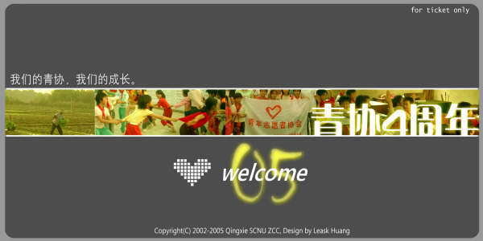

接到朋友的要求设计一张单面彩色的晚会入场卷，于是……
做得很一般，但是有一些局部很也算让我满意。
觉得自己在感知色彩方面有了进步，但是形态和线条的把握却有一点失去分寸。
是不是最近心绪比较杂乱还是因为再看那本《像艺术家一样思考》的原因呢？
不管怎么样说，感谢sas给我的这份生日礼物，我想这本书会带给我很多很多。
好了还是由于分辨率的问题，大家把下面的图片下载到电脑再看吧，谢谢捧场！
其实设计只是一种表达，并不是为了完成这一特定作品而设计的，虽然这样说很不负责任，设计是一个人某一时刻独特心境的写照，是作者个性的张扬表达。
已经是早上了，我也要休息了，不知什么时候我又继续了以往颠倒的生活，可能我真的需要一个可以照顾我，“骂我”去睡觉的人。身体抗议了，很累，真的很累……
大家还在做梦吧，希望你们都是在甜梦中。
PS：由于MSN Space的限制只能上传低质量的版本。
